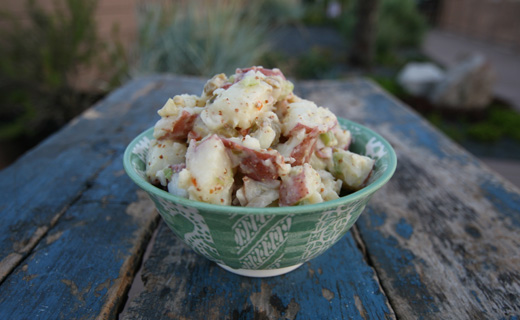
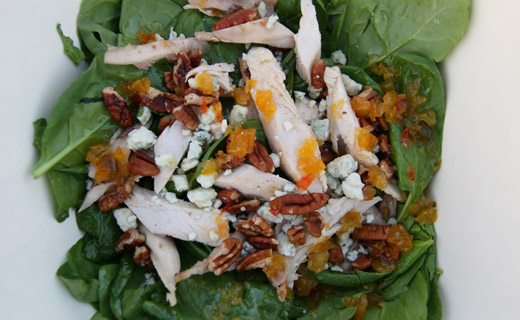
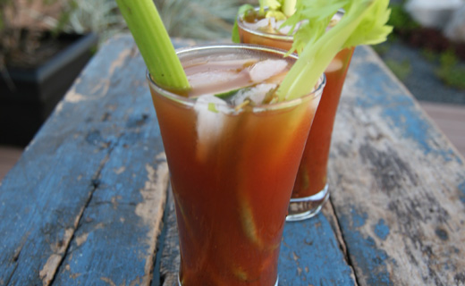

Creole Potato Salad
- 3 lbs. Red Potatoes, scrubbed well and cubed
- ¾ Cup Mayonnaise
- ½ Cup Creole Mustard (We love Zatarains)
- 2 Tablespoons Old Soul Spicy Dilly Dill pickle juice
- 1 Teaspoon Sugar
- Salt and freshly ground Black Pepper
- 1 Small Vidalia Onion, chopped
- 2 Stalks Celery, chopped
- 2 Cloves Garlic, chopped
- 6 Spears Old Soul Spicy Dilly Dills (diced)
- 1 Cup Green Olives (sliced or diced)
Place the cubed potatoes in a large pot of cold salted water. Bring to a boil. Cook potatoes until they are fork tender. Drain in a colander and let cool. In a small bowl, whisk together mayonnaise, mustard, apple cider vinegar, sugar, salt and pepper. Once cool, add potatoes to a large bowl. Add chopped onions, celery, pickles, olives and garlic. Pour the dressing over the potatoes and mix well. Season with salt and pepper, if needed.
Habanero Apricot Vinagirette
- ½ Cup Old Soul Habanero Apricot Jam
- ¼ Cup Apple Cider or Red Wine Vinegar
- ½ Cup Extra Virgin Olive Oil
- Salt and Pepper to taste
Combine vinegar and Habanero Apricot Jam. Pour the oil in as you whisk dressing. Pour dressing over salad, season with salt and black pepper, to taste, and serve.
Old Mary
- 2 oz. Absolut Peppar Vodka
- 4 oz. Zing Zang Bloody Mary Mix
- ¼ Teaspoon Worcestershire Sauce
- Big squeezes of lime and lemon juice
- Salt and Pepper, to taste
- Hot Sauce, to taste (Crystal is our fave)
- Garnish: Old Soul Pickle Jubilee (cucumber, asparagus, green bean, okra) 1 celery stalk, lemon, lime
Fill a glass with ice. Pour all ingredients over ice and gently stir.
Zucchini & Squash Caprese Salad
- 1 Jar of Old Soul Pickled Zucchini & Squash
- 3 Vine Ripe Tomatoes
- 1 Pound of Fresh Cut Mozzarrella
- 1 Bunch of Fresh Basil
Begin by cutting the tomatoes and mozzarrella into 1/4 inch slices. Line the slices into a serving dish, alternating tomato and cheese slice. Using a spoon lay the Pickled Zucchini & Squash over the tomatoes and mozzarrella. Drizzle the juices of the jar so that it covers the entire dish. Top your salad with the fresh basil.
Salted Caramel Mini Cheesecakes
- 2 ¼ Cups finely crushed Graham Crackers (from 18 sheets)
- 3 Tablespoons Granulated Sugar
- 7 Tablespoons Salted Butter, melted
- 4 (8 oz) Package Cream Cheese, softened
- 1 ½ Cups Granulated Sugar
- 3 Tablespoons All-Purpose Flour
- 4 Large Eggs
- 2 Teaspoons Vanilla Extract
- ½ Cup Sour Cream
- ½ Cup Heavy Cream
- Old Soul Ms. Gaye’s Sinful Salted Caramel
Preheat oven to 350 degrees. Whisk crushed graham crackers with 3 tablespoons granulated sugar. Pour in melted butter and stir mixture until evenly coated. Divide graham cracker mixture among 24 paper lined muffin cups, adding about a heaping tablespoon to each. Press mixture into an even layer. Bake in preheated oven 5 minutes. Remove from oven and allow to cool while preparing filling.
In a small mixing bowl, whisk 1 ½ cups granulated sugar with 3 tablespoons flour until well blended. Add softened cream cheese to a separate mixing bowl and pour sugar mixture over top. Blend mixture on low speed until smooth. Mix in eggs one at a time and blend on low speed, while scrapping sides and bottom of bowl and mixing just until combined after each addition. Add vanilla, sour cream and heavy cream and mix just until combined. Tap bowl against counter top several times to release some of the air bubbles. Divide mixture among muffin cups filling each cup nearly full. Bake in preheated oven 20 - 23 minutes, centers should still jiggle slightly, don't over-bake (if they begin to crack they are starting to become overbaked). Remove from oven and allow to cool 1 hour. Cover loosely with plastic wrap and transfer to refrigerator and chill 2 hours. Serve chilled with a spoonful of Salted Caramel Sauce (note: for best results spoon sauce on just before serving). Store in an airtight container in refrigerator or freeze.
Heavenly Hash Sundae

- 1 Box of Brownie Mix prepared to box directions
- 3 Cups Mini Marshmallows
- 1 Cup Sliced Almonds
- 1 Jar of Old Soul Mexican Fudgey Sauce
Prepare brownies to package directions and remove from oven. Top with marshmallows and return to hot oven until marshmallows puff up and melt slightly. Remove from oven and top with almonds, cool.
Remove lid from Mexican Fudgey Sauce and heat the whole jar in the microwave for 20 seconds. Pour the saucy goodness over almonds and marshmallows. Serve warm with vanilla ice cream.